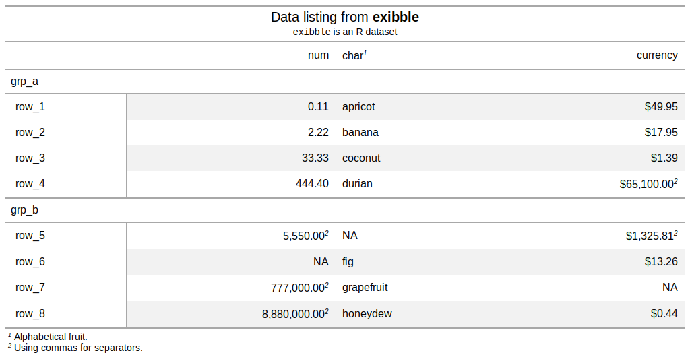
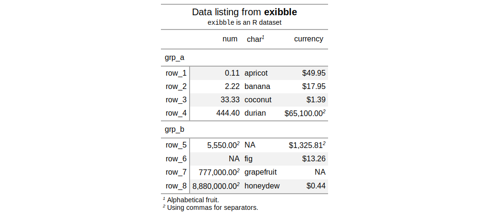

| tab_options {gt} | R Documentation |
Modify the options available in a table. These options are named by the components, the subcomponents, and the element that can adjusted.
tab_options(data, table.width = NULL, table.font.size = NULL, table.background.color = NULL, table.border.top.style = NULL, table.border.top.width = NULL, table.border.top.color = NULL, heading.background.color = NULL, heading.title.font.size = NULL, heading.subtitle.font.size = NULL, heading.border.bottom.style = NULL, heading.border.bottom.width = NULL, heading.border.bottom.color = NULL, column_labels.background.color = NULL, column_labels.font.size = NULL, column_labels.font.weight = NULL, stub_group.background.color = NULL, stub_group.font.size = NULL, stub_group.font.weight = NULL, stub_group.border.top.style = NULL, stub_group.border.top.width = NULL, stub_group.border.top.color = NULL, stub_group.border.bottom.style = NULL, stub_group.border.bottom.width = NULL, stub_group.border.bottom.color = NULL, field.border.top.style = NULL, field.border.top.width = NULL, field.border.top.color = NULL, field.border.bottom.style = NULL, field.border.bottom.width = NULL, field.border.bottom.color = NULL, row.padding = NULL, summary_row.background.color = NULL, summary_row.padding = NULL, summary_row.text_transform = NULL, footnote.sep = NULL, footnote.glyph = NULL, footnote.font.size = NULL, footnote.padding = NULL, sourcenote.font.size = NULL, sourcenote.padding = NULL, row.striping.include_stub = NULL, row.striping.include_field = NULL)
data |
a table object that is created using the |
table.width |
the width of the table. Can be specified as a
single-length character with units of pixels or as a percentage. If
provided as a single-length numeric vector, it is assumed that the value is
given in units of pixels. The |
table.font.size, heading.title.font.size, heading.subtitle.font.size, column_labels.font.size, stub_group.font.size, footnote.font.size, sourcenote.font.size |
font sizes for the parent text element |
table.background.color, heading.background.color, column_labels.background.color, stub_group.background.color, summary_row.background.color |
background colors for the parent element |
table.border.top.style, table.border.top.width, table.border.top.color |
the style, width, and color of the table's top border. |
heading.border.bottom.style, heading.border.bottom.width, heading.border.bottom.color |
the style, width, and color of the heading's bottom border. |
column_labels.font.weight, stub_group.font.weight |
the font weight of the
|
stub_group.border.top.style, stub_group.border.top.width, stub_group.border.top.color |
the style, width, and color of the stub heading's top border. |
stub_group.border.bottom.style, stub_group.border.bottom.width, stub_group.border.bottom.color |
the style, width, and color of the stub heading's bottom border. |
field.border.top.style, field.border.top.width, field.border.top.color |
the style, width, and color of the field's top border. |
field.border.bottom.style, field.border.bottom.width, field.border.bottom.color |
the style, width, and color of the field's bottom border. |
row.padding, summary_row.padding |
the amount of padding in each row and in each summary row. |
summary_row.text_transform |
an option to apply text transformations to the label text in each summary row. |
footnote.sep |
the separating characters between adjacent footnotes in the footnotes section. The default value produces a linebreak. |
footnote.glyph |
the set of sequential figures or characters used to
identify the footnotes. We can either supply the keyword |
footnote.padding, sourcenote.padding |
the amount of padding to apply to the footnote and source note sections. |
row.striping.include_stub |
an option for whether to include the stub when striping rows. |
row.striping.include_field |
an option for whether to include the field when striping rows. |
an object of class gt_tbl.


Other table-part creation/modification functions: gt_preview,
gt, tab_footnote,
tab_header, tab_row_group,
tab_source_note, tab_spanner,
tab_stubhead_label, tab_style
# Use `exibble` to create a gt table with
# all the main parts added; we can use this
# going forward to demo some `tab_options()`
tab_1 <-
exibble %>%
dplyr::select(
-c(fctr, date, time, datetime)
) %>%
gt(
rowname_col = "row",
groupname_col = "group"
) %>%
tab_header(
title = md("Data listing from **exibble**"),
subtitle = md("`exibble` is an R dataset")
) %>%
fmt_number(columns = vars(num)) %>%
fmt_currency(columns = vars(currency)) %>%
tab_footnote(
footnote = "Using commas for separators.",
locations = cells_data(
columns = vars(num),
rows = num > 1000)
) %>%
tab_footnote(
footnote = "Using commas for separators.",
locations = cells_data(
columns = vars(currency),
rows = currency > 1000)
) %>%
tab_footnote(
footnote = "Alphabetical fruit.",
locations = cells_column_labels(
columns = vars(char))
)
# Modify the table width to 100% (which
# spans the entire content width area)
tab_2 <-
tab_1 %>%
tab_options(
table.width = pct(100)
)
# Modify the table's background color
# to be "lightcyan"
tab_3 <-
tab_1 %>%
tab_options(
table.background.color = "lightcyan"
)
# Use letters as the glyphs for footnote
# references; also, separate footnotes in
# the footer by spaces instead of newlines
tab_4 <-
tab_1 %>%
tab_options(
footnote.sep = " ",
footnote.glyph = letters
)
# Change the padding of data rows to 5px
tab_5 <-
tab_1 %>%
tab_options(
row.padding = px(5)
)
# Reduce the size of the title and the
# subtitle text
tab_6 <-
tab_1 %>%
tab_options(
heading.title.font.size = "small",
heading.subtitle.font.size = "small"
)